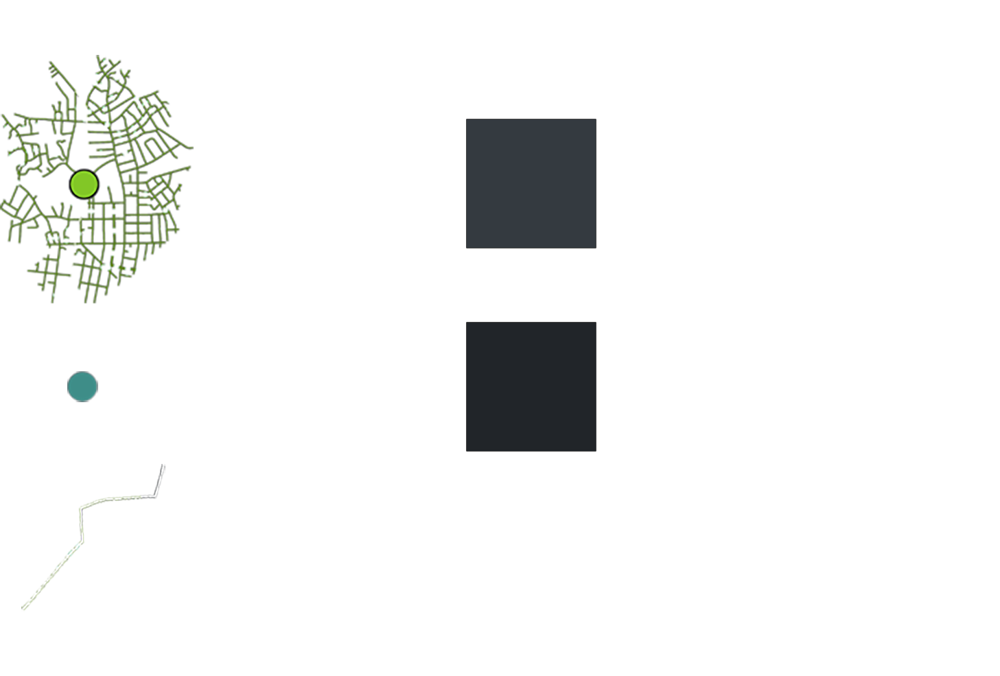

Boston Supermarkets Service Networks
This first map is an overview of the food retail environment by visualizing accessibility: walkability according to 1 mile service networks for each supermarket as well as limited access to bus lines. 